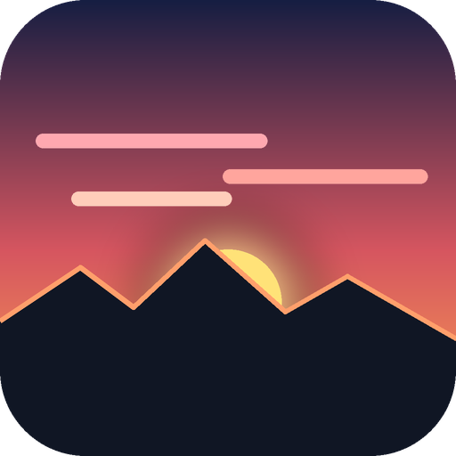

Afterglow
Sunrise, sunset, moonrise and moonset against your real skyline, with a forecast of how colourful the sky will be.
If it has been asleep it shows "This app has gone to sleep": tap the button there and wait about a minute.
Put it on your home screen
iPhone or iPad (Safari): tap the Share button (square with an arrow), then Add to Home Screen, then Add.
Android (Chrome, Samsung Internet, Edge): tap the three dots, then Add to home screen or Install app.
Then open it from the sunset icon Afterglow: it goes straight to the app.
The first time you tap Use my location in the app, allow location for the site.
Free, no ads, no account. Sun and Moon from NASA JPL; terrain from open elevation data; clouds from Open-Meteo; weather maps by Windy. Your position is used only to calculate and is not stored.